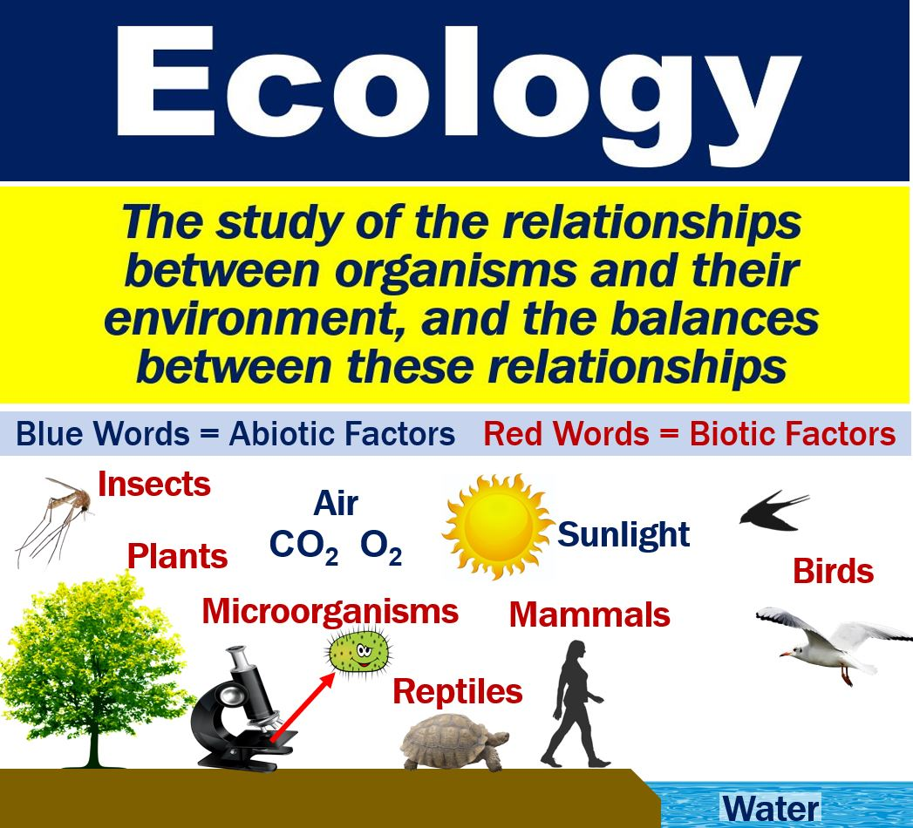

Ecosystems are dynamically interacting systems of organisms, the communities they make up, and the non-living components of their environment. Ecosystem processes, such as primary production, nutrient cycling, and niche construction, regulate the flux of energy and matter through an environment. Ecosystems have biophysical feedback mechanisms that moderate processes acting on living (biotic) and non-living (abiotic) components of the planet. Ecosystems sustain life-supporting functions and provide ecosystem services like biomass production (food, fuel, fiber, and medicine), the regulation of climate, global biogeochemical cycles, water filtration, soil formation, erosion control, flood protection, and many other natural features of scientific, historical, economic, or intrinsic value.
